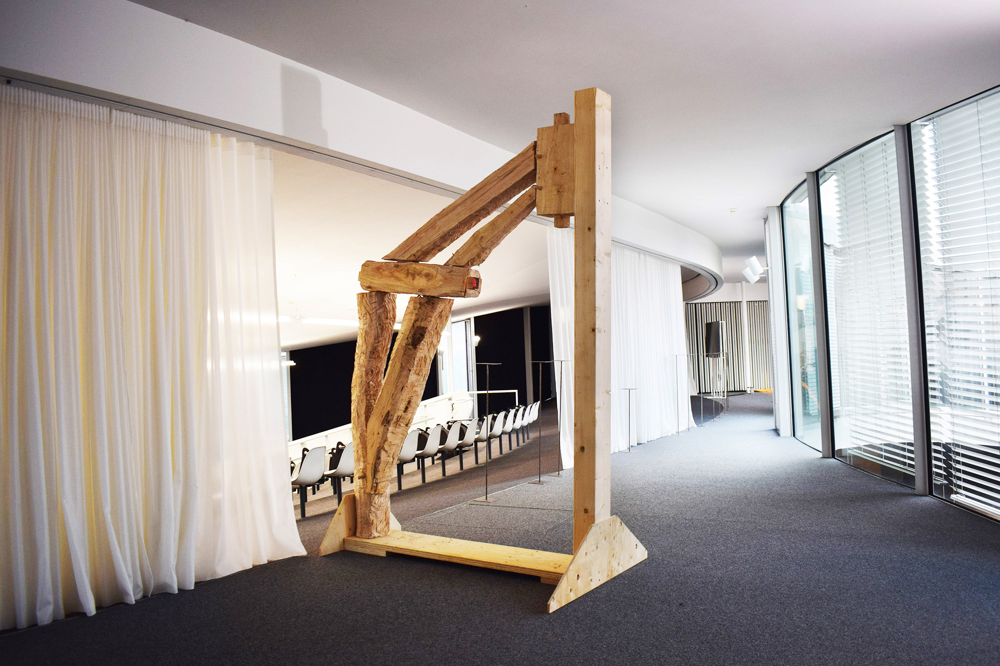

Since the 2020s, Switzerland has improved forest health by increasing species diversity, leading to more irregular, diverse wood—often unfit for conventional sawmills and typically used as biomass. Yet, this material has untapped potential for sustainable construction. This study explores a workflow that merges robotic fabrication with traditional woodworking to use such wood in architecture. Robots cut guides and joints, while a craftsperson finishes the beam using medieval hewing methods, respecting fiber orientation. A 1.5 × 3 m prototype frame built from salvaged curved hardwood demonstrates the structural potential of irregular wood. Interviews with foresters, sawmills, manufacturers, and artisans provide insight into the supply chain. This approach reduces waste, extends CO₂ storage, and supports adaptive construction using forest variability.
Hybrid craft
Hand tools offer adaptability for working with irregular wood, allowing craftspeople to follow each log’s unique grain, preserving strength and reducing waste. Machines provide precision, speed, and efficiency but often struggle with variability and require complex setup. Hybrid workflows combine these strengths for optimal results. In a northeastern France workshop, timber is locally harvested in winter, hand-hewn to remove sapwood, and aligned to full-scale drawings adapted to each beam’s shape. Robotic tools handle guide cuts and joint marking, while artisans perform interpretive shaping using traditional axes for controlled, fiber-aligned splitting. The process begins with log assignment, scanning, robotic marking, and manual finishing, culminating in assembly. This integrated workflow operates in a single adaptable facility, minimizing transport and blending digital precision with traditional craft knowledge.

Mapping
The hybrid fabrication system is designed for timber arches, a structural form chosen for its efficient load distribution and minimal material use. Logs are minimally squared, preserving natural curvature and central fiber alignment to enhance strength and stability. Mortise-and-tenon joints were selected for their resistance to shear and axial forces, with dowels added for improved moment resistance. Tenons also function as handles for easier manipulation during fabrication. Logs are mapped to a skeletal design based on curvature, treated as 2D elements, and processed flat on one side. Supplied by the city of (redacted), logs were classified by curvature, species, length, and diameter. Stronger, straighter logs were used for vertical supports, while curved ones formed the arches, maximizing structural efficiency through species-informed, curvature-based placement.

Design
The feasibility of the process was demonstrated through a prototype built with curved wood sourced from the city of Lausanne, which annually collects 1,000–1,500 m³ of waste logs during forest maintenance. Typically processed into wood chips, this irregular hardwood presents an untapped resource for construction. To test the method’s potential, we designed a 10-meter-span arch as an intervention in an existing farm building in western Switzerland. Many such buildings are obsolete due to spatial and lighting constraints. The arch integrates into the original structure, creating open space and illustrating how hybrid fabrication can revitalize underused rural architecture.

Process
The fabrication process begins with placing a log on a scissor sawhorse, where it is scanned by a stereo camera mounted on a robotic arm. The scan localizes the log and aligns pre-designed cuts to its geometry. Using compas_rrc, robotic trajectories are streamed, and the robot-mounted chainsaw executes tenon cuts. The log is then moved to another sawhorse and clamped by the tenons. The robot adds notches and flat cuts, followed by mortise joints. Once robotic tasks are complete, a craftsperson removes sapwood manually using a long-handled axe, guided by notches. A smaller axe refines the surface, and joints are sharpened with chisels. Elements are assembled flat, tilted upright, and secured with supports. Wooden dowels are added to lock the joints and complete the structure.

